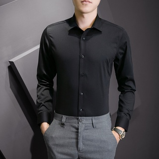

Polo Shirt
High Quality Fabric The mens casual short sleeve shirt is made of textured material. Breathable, soft,
lightweight and skin friendly fabric keeps you cool and comfortable even in summer.
Classic Design Coofandy mens summer shirt features regular fit, spread collar, short sleeve and button closure.
Casual and simple designs will never be out of style.
lightweight and skin friendly fabric keeps you cool and comfortable even in summer.
Classic Design Coofandy mens summer shirt features regular fit, spread collar, short sleeve and button closure.
Casual and simple designs will never be out of style.

Pants
Pants are an item of clothing worn from the waist to anywhere between the knees and the ankles, covering both legs separately. In the United Kingdom, the word pants generally means underwear and not trousers.

Polo shirt Longsleeve
Material: 95% Cotton, 5% Spandex.Soft and comfortable to your skin,suit for daily wear or work.
Long sleeve & casual slim fit henley shirts, comfortable and slim fit casual wear, lightweight, basic designed. High Softness & Wearability.
Suitable Occasion: Casual, Office, Work, Date, Party, Travel, Street, etc. Looking handsome while retaining ease of movement and added comfort.
Long sleeve & casual slim fit henley shirts, comfortable and slim fit casual wear, lightweight, basic designed. High Softness & Wearability.
Suitable Occasion: Casual, Office, Work, Date, Party, Travel, Street, etc. Looking handsome while retaining ease of movement and added comfort.